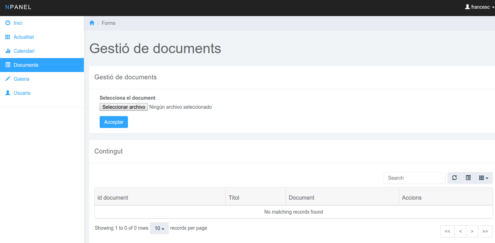

En aquest apartat podrem pujar documents mitjançant aquest camp es important saber que el nom del document sera el que es mostrara
Despres tenim la taula amb varies opcions que són les següents
- Refrescar la taula (Per si tenim dades noves)
- Amagar tots els noms de les taules
- Amagar solament alguna columna
- Buscar registres
- Paginador
- Mostrar 10, 25, 50 o 100 registres
Despres Pases al interior de la taula a la columna Accions on esta ubucada l'opcio d'eliminar
- Botonet Roig = Eliminar
- Al fer click al boto d'eliminar ens mostrara un avis conforme si volem eliminar aquell document o no
